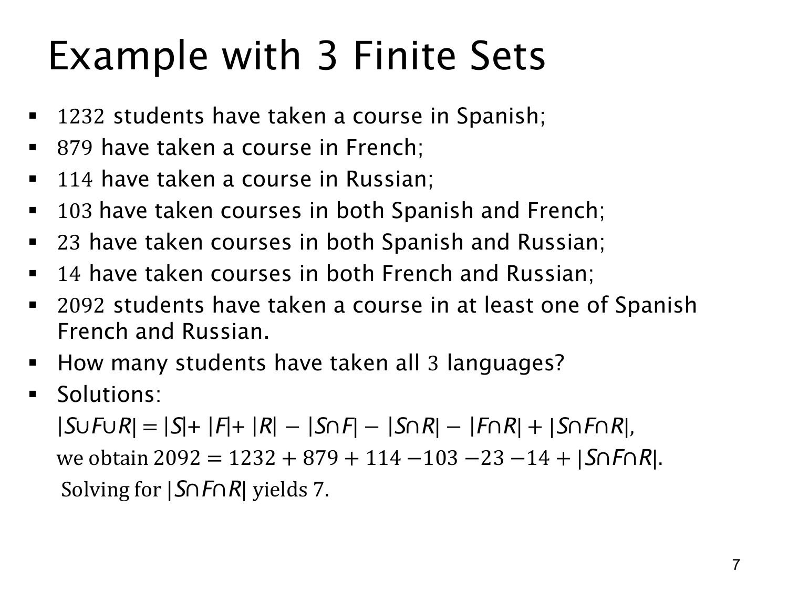

L1.8 · 第 6 页讲解原文
查看这一页课件

用容斥反求三种语言都学过的人数
设 S,F,R 分别表示学过西班牙语、法语、俄语的学生集合。已知三个集合的大小分别为 1232、879、114，两两交集分别为
∣S∩F∣=103,∣S∩R∣=23,∣F∩R∣=14.
“至少学过一种语言”的 2092 人对应并集 S∪F∪R。题目要找的是三重交集，设
x=∣S∩F∩R∣.
将数据代入三集合容斥公式：
2092=1232+879+114−103−23−14+x.
先算前三项之和 2225，再减去两两交集之和 140，得到
2092=2085+x,x=7.
为什么只减交集后得到 2085，比正确人数少 7？因为同时学过三种语言的学生最初加了 3 次，又在三个两两交集中各减 1 次，最后变成 0 次。把他们加回一次，才能得到 2092。
这里的 103 人不是“只学过西班牙语和法语的人”，而是两种都学过的人，其中包括三种都学过的 7 人。因此恰好学过西班牙语和法语、但没学俄语的是 103−7=96 人。另两块恰好学两种的区域分别为 23−7=16 和 14−7=7。
也可以核对只学一种的人数：
只学西班牙语只学法语只学俄语=1232−103−23+7=1113,=879−103−14+7=769,=114−23−14+7=84.
这七个互斥区域相加为 1113+769+84+96+16+7+7=2092，与题目一致。容斥公式不仅能求并集，也能在其余数据已知时反求某个交集。